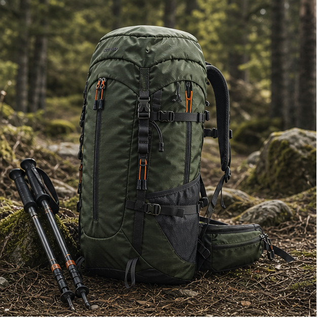
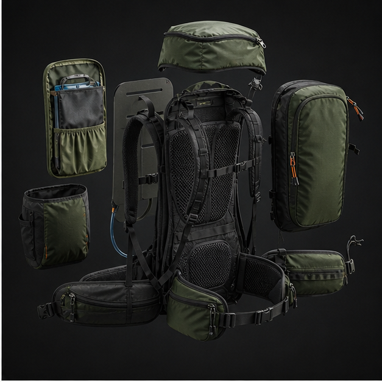
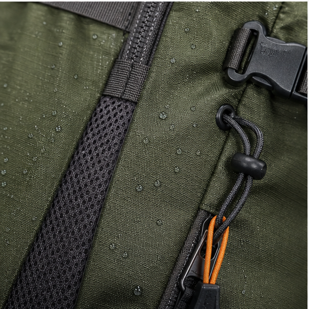
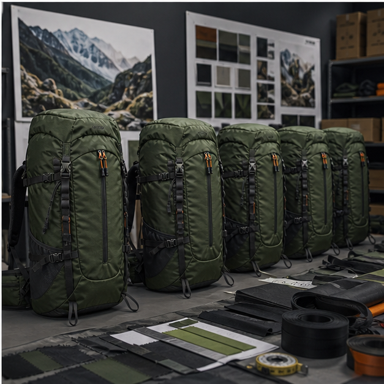

Outdoor backpacks are engineering products
A hiking backpack is judged by comfort, durability and organization under load. The customer may not understand every construction detail, but they immediately feel whether the shoulder straps pull correctly, whether the hip belt stabilizes weight, whether the back panel breathes and whether the pack remains useful after rain, dust and repeated trail use. Cappuccino Bag develops custom hiking backpacks for outdoor brands, travel companies, promotional programs and retailers that need a factory partner able to balance design ambition with production reality.
A serious hiking backpack page should not stop at capacity and color. Buyers need to think about torso length, back panel structure, foam density, ventilation, hydration routing, compression straps, rain-cover storage, bottom reinforcement, pocket access and seam strength. Those choices determine whether the product feels credible to outdoor customers.
Capacity and carry system planning
Small daypacks in the 15 to 25 liter range can prioritize lightweight fabric, clean organization and commuter crossover. Mid-size hiking packs around 30 to 45 liters need better shoulder support, sternum straps, hip belts, side compression and more stable back panels. Larger travel or trekking packs require more complex frame support and careful sample testing because poor load transfer will be obvious to users.
Carry comfort depends on pattern geometry, not only foam thickness. Strap angle, shoulder curve, sternum strap height, hip belt position and back panel shape all work together. During development, we review loaded fit and adjust anchors if the pack pulls away from the body or rubs at the neck. A thicker strap can still feel bad if it is placed incorrectly.
Pocket layout and outdoor function
Useful hiking backpack pockets are designed around movement. Side pockets should hold bottles securely without requiring the user to remove the pack awkwardly. Front shove pockets are helpful for jackets or wet layers. Hip belt pockets need zipper openings that can be operated with one hand. Hydration sleeves need tube routing and hanger placement that do not interfere with the main compartment.
Rain-cover pockets, trekking pole loops, daisy chains and compression straps can create a strong outdoor story, but only when they are integrated cleanly. Too many loops and straps can make a backpack look busy and increase production risk. For many brands, the best product is a clean outdoor pack with a few features that work well rather than a complicated pack with features customers ignore.
Materials that match the promise
Outdoor packs often use ripstop nylon, high-density polyester, PU coating, TPU-coated panels, air mesh, spacer mesh, nylon webbing, acetal buckles, cord locks and reinforced bottom fabrics. Water resistance should be described carefully. A coated fabric can resist rain, but seams and zippers still need attention. If the buyer wants a stronger waterproof claim, the development route changes toward welded construction or more specialized materials.
Material selection also affects shape. A very soft lightweight fabric may reduce weight but make the pack collapse in product photos. A stiffer coated fabric may look premium but increase sewing difficulty around curves. We help buyers choose fabric based on the intended retail story, target price, minimum order quantity and expected use environment.
Testing and QC for hiking backpacks
QC should include seam strength at shoulder straps and hip belt anchors, zipper smoothness, buckle function, webbing slippage, pocket symmetry, hydration routing, rain-cover fit, logo position and packing recovery. Load testing is especially important for packs that will carry more than daily essentials. Bartack placement, reinforcement patches and thread selection can make the difference between a backpack that looks outdoor and a backpack that performs outdoors.
Before shipment, photo QC can show front, back panel, inside, straps, buckles, logo, carton marks and random detail checks. For outdoor products, this documentation gives buyers more confidence because small failures can become expensive returns when customers use the pack on trips.
Development case examples
A travel brand may ask for a 28 liter hiking-inspired backpack that works for day hikes and weekend city travel. The right solution might include a breathable back panel, laptop sleeve, side bottle pocket, clean front pocket and durable coated bottom. A more technical outdoor brand may need a 40 liter pack with hydration sleeve, hip belt pockets, rain-cover pocket, trekking pole loops and compression straps. Both projects are backpacks, but the sampling logic, material cost and QC priorities are different.
Cappuccino Bag can support both directions by turning buyer goals into a production-ready specification. We can help refine dimensions, pocket positions, material selection, logo method and packaging before bulk production, reducing the risk of samples that look good but miss real user needs.
Buyer specification checklist for hiking backpack projects
A hiking backpack specification should begin with capacity, load range and use environment. A 20 liter daypack for light trails has very different requirements from a 45 liter pack for multi-day travel. Buyers should define torso fit expectations, shoulder strap design, hip belt requirement, hydration compatibility, rain-cover storage, bottle pocket size, compression strap layout, back-panel ventilation and bottom reinforcement.
Material references are especially important for outdoor packs. A buyer should clarify whether the priority is lightweight, abrasion resistance, water resistance, structure, recycled content or price. These goals can conflict. A very light fabric may reduce weight but weaken shape. A stiff coated fabric may look premium but make sewing more difficult. Clear priorities help the factory recommend a practical combination.
Cost drivers and outdoor credibility
The main cost drivers for hiking backpacks are fabric type, capacity, foam, mesh, back-panel construction, frame sheet, buckle level, webbing volume, number of pockets and labor complexity. Technical-looking features can add cost without improving real use if they are not planned carefully. For example, many straps and loops may look outdoor, but poor placement creates clutter and sewing risk.
Outdoor credibility comes from features that work: stable shoulder straps, functional compression, secure bottle pockets, a breathable back panel, durable bottom fabric and clean reinforcement at stress points. Buyers can often achieve a stronger product by investing in these areas instead of adding decorative hardware. Cappuccino Bag helps identify which details support the sales story and which details only increase complexity.
Sample testing before bulk production
A hiking backpack should be tested with weight, not only inspected empty. Add realistic load, adjust straps, walk with the pack and check whether the back panel, shoulder straps and hip belt work together. Open side pockets while wearing the pack. Pull compression straps. Insert and route a hydration bladder if that feature is included. These simple tests expose pattern issues that a flat photo cannot show.
Bulk approval should also confirm seam reinforcement and packing recovery. Outdoor packs often have foam panels and shaped backs that can deform if packed too tightly. The approved packing method should protect the shape while keeping carton efficiency reasonable. QC photos before shipment can document the exact packed form, which is useful for buyers receiving goods overseas.
Image proof and case evidence to add before final publishing
For a hiking backpack page, the strongest real photos would show the back panel, shoulder straps, hip belt, hydration routing, rain-cover pocket, bottom reinforcement and loaded shape. A simple studio photo is not enough for outdoor buyers. They need to see carrying-system evidence and material details. Case images from sample inspection, load testing or pre-shipment QC can make the page more credible than a broad outdoor lifestyle image.
RFQ mistakes to avoid
For hiking backpacks, vague RFQs often focus only on liter capacity. Capacity is important, but it does not describe the carrying system. Buyers should clarify expected load, back-panel type, shoulder strap shape, hip belt requirement, hydration compatibility, fabric priority, rain-cover need and bottom reinforcement. Without those details, two 35 liter backpack quotations can represent completely different products. A precise RFQ helps the factory quote the right construction instead of guessing from a photo.
Send us your target product brief
Share reference photos, expected order quantity, target price level, material preference, logo method and packaging needs. Cappuccino Bag can review the concept and suggest a practical sample route.
Request OEM/ODM Support